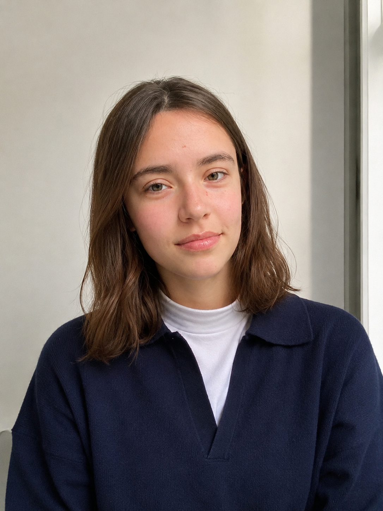

Emilia Cerrato Iraola
Soy estudiante de los ultimos años de la carrera de Diseño y Comunicación visual. Me considero una persona creativa y capaz de trabajar y desarrollar ideas en equipo. Me gusta estar en constante aprendizaje y rodearme de personas con experiencia, para poder adquirir nuevos conocimientos de ellos.
Datos personales
- Edad: 22 años
- Ciudad: Cañuelas
- Dirección: Los Robles 96, V. Casares
- Teléfono: 2226 - 521301
- Mail: emicerrato20@gmail.com